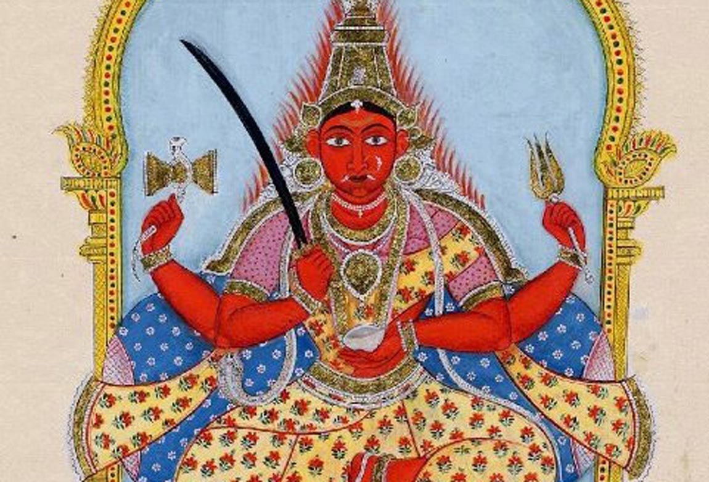
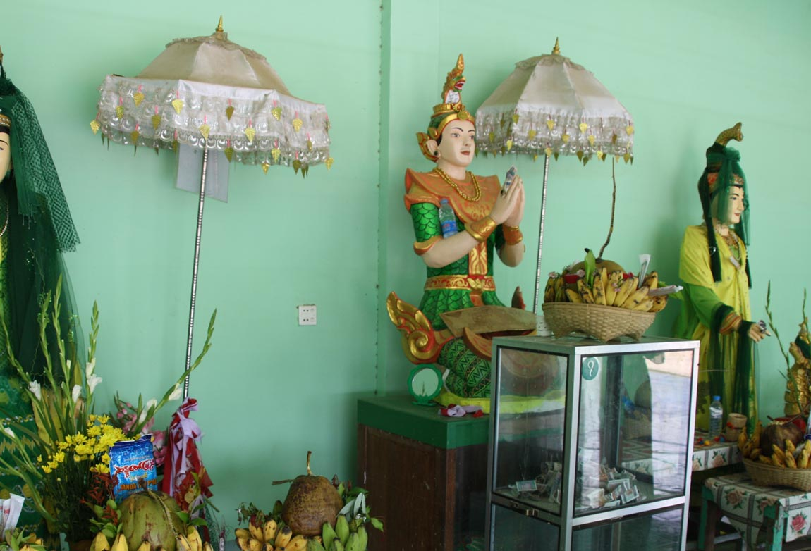
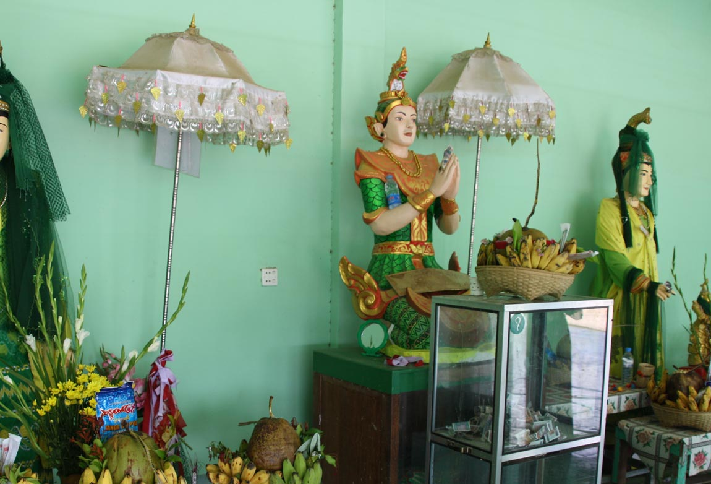

Earth goddesses, snakes
and the monsoon

Snakes are ectothermic beings; temperature, humidity, cloud cover and precipitation influence their behavior. Snake activity increases during monsoon months and snake bite incidents surge as human-snake encounters intensify. Snakes and nagas, serpent-like beings, are associated with water, rain and fertility across the Indian subcontinent. Snake rituals reveal entanglements between snakes, people, belief systems and the monsoon.
Mariamman, snakes and anthills
Mariamman is a rain goddess, invoked to bring rains to Tamil Nadu. Temples to the goddess are often made around anthills where snakes, particularly cobras, are believed to dwell. Both snakes and anthills are forms of the goddess. Milk is given as ‘cooling’ offerings to snakes, and mounds are adorned with yellow flowers and vermillion. Historically Mariamman was the goddess of smallpox, a seasonal disease that proliferated during the dry and windy month of Aadi, and subsided with monsoon onset. Songs to the goddess compared pox-affliction to snakebites. Mariamman is still immensely popular in Chennai


Manasa, snake charmers
and waterways
Bede are skilled snake catchers in Bangladesh who remove poisonous snakes that infest Bengali villages during monsoon season. Bede lead nomadic lives, moving on boats across the riverine landscape of the Bengal delta. They charm snakes and cure snake bites as they travel. Monsoon season is important for the Bede as this is when snakes are most active and river water is high, allowing easy movement. While charming snakes, they perform rituals and songs to the Bengali snake goddess Manasa. In recent times, rivers have deteriorated and snake populations have declined making Bede nomadic life increasingly challenging.


Naga goddesses, snake pagodas
and mud volcanoes
Snake and naga worship was part of pre-Buddhist animist traditions in Myanmar. A place with lingering associations to naga beliefs are the mud volcanoes of Minbu, known as Naga Pywet Taung, or ‘mountain where the naga breathes’. Worshippers pour milk libations into the bubbling mud pools and give offerings to goddess Naga Mae Daw. Minbu is located near the Myanmar oil fields of Yenangyaung. They provide tangible connections to the treasures of the earth that nagas are rumoured to guard. Although nagas dwell in the underworld, they are also believed to have power over wind and rain.


 


Human-snake entanglements
Snake rituals and associated mythologies embody intimate connections between humans, snakes, weather and environment that have emerged over time. These practices are not just symbolic, but maintain ties between humans, nonhumans and their earthly ecologies. In recent years there has been a significant decline in snake populations throughout the Indian subcontinent and around the globe. South Asia is where most urban growth is expected to occur in coming decades, with further consequences for nonhuman species. Snakes are particularly at risk and although rituals offer ways of ‘making kin’ with snakes, they may not be sufficient to ensure their future survival.